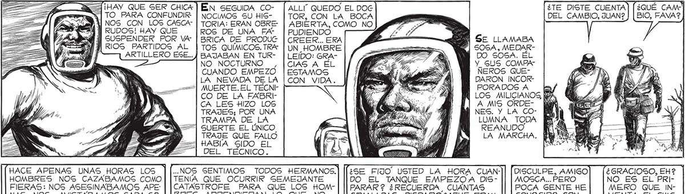
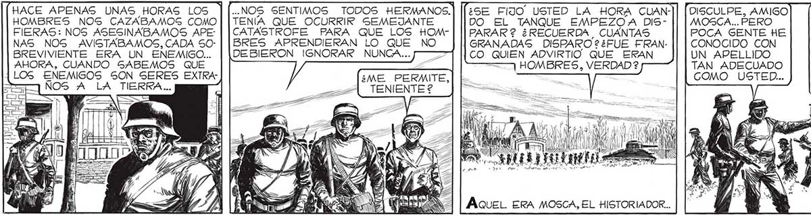

- a ¡HAY QUE SER CHICA | TO PARA CONFUNDIR: ÉN SEGUIDA CONOCIMOS SU HIGALLÍ” QUEDO EL DOG TOR, CON LA BOCA ¿TE DISTE CUENTA DEL CAMBIO, JUAN? ¿QUÉ CAM BIO, FAVA?2 103 Y NOS CON LOS CASCA- | TORIA: ERAN OBREABIERTA, COMO NO YN RUDOS! HAY QUE ROS DE UNA EA | PUDIENDO NI ] SUSPENDER POR VA” | BRICA DE PRODUC | CREER... ERA NW SE LLAMABA 3 A RIOS PARTIDOS AL | TOS QUÍMICOS.TRA" | UN_ HOMBRE | SOSA, MEDARARTILLERO ESE... BAJABAN EN TUR- | LEIDO: GRA- DO SOSA. ÉL NO NOCTURNO CIAS A EL Y_ GUS COMPACUANDO EMPEZO | ESTAMOS ÑEROS QUELA NEVADA DE LA [CON VIDA. DARON INCOR| MUERTE. EL TECNI- PORADOS A CO DE LA FABRI- LOS MILICIANOS, Ñ CA LES HIZO LOS A MIS ORDETRAJES; POR UNA NES. Y LA CO_| TRAMPA DE LA LUMNA TODA | GUERTE EL ÚNICO, REANUDO TRAJE QUE FALLO LA MARCHA. | HABÍA SIDO EL DEL TÉCNICO. GS SENTIMOS TODOS HERMANOS. TENIA QUE OCURRIR SEMEJANTE CATASTROFE PARA QUE LOS HOMBRES APRENDIERAN LO QUE NO DEBIERON IGNORAR NUNCA... > HACE APENAS UNAS HORAS LOS HOMBRES NOS CAZABAMOS COMO FIERAS: NOS ASESINABAMOS APE: NAS NOS AVISTABAMOS, CADA 50: BREVIVIENTE ERA UN ENEMIGO... AHORA, CUANDO SABEMOS QUE LOS ENEMIGOS SON SERES EXTRA" NOS A LA TIERRA... ¿GRACIOSO, EH? NO ES EL PRIMERO QUE INVENTA EL CHISTE... ¡ SÍ, 50Y UN PESADO PORQUE ME LO PA 60 PREGUNTANDO! ¿SE FIJO” USTED LA HORA CUANDO EL TANQUE EMPEZOA DISPARAR 2 ¿RECUERDA CUANTAS GRANADAS DISPARO ?¿FUE FRANCO QUIEN ADVIRTIO. QUE ERAN =— HOMBRES, VERDAD? DISCULPE, AMIGO MOSCA... PERO POCA GENTE HE CONOCIDO CON UN APELLIDO TAN ADECUADO COMO USTED... AQUEL ERA MOSCA, EL HISTORIADOR.. PUEDE ¡PERO LA HISTORIA NO SE ESCRIBIR SIN PREGUNTAR! ¿ENTENDIDO? DECIR. EL TANQUE DE LA PUNTA REBASABA YA EL TIRO FEDERAL. NOS ACERCA” BAMOSG A NUES TRO OBJETIVO: ESTÁBAMOS YA A MUY POCAS CUADRAS DEL ESTADIO. VI ACERCARSE AL MAYOR: ANTES WM DE QUE HABLA |á RA YA SABIA YO | LO QUE IBA A EL TANQUE SE ADELANTARA HASTA EL ESTADIO. USTED, TENIENTE SALVO, LO APOYARA CON SUS MILICIANOS. ENTENDIDO, GEÑOR. “APOYAR EL TANQUE”... ¿POR QUÉ NO LLAMARA A LAS COSAS POR SU NOMBRE 2 ¿POR QUÉ NO DIRA: “VAYAN, PARA VER Gl HAY ALGO QUE LOS REVIENTA O NO”2f GIBLE, TENIENTE, QUE LOS CASCARUTODAVIA NO LOS CONOCEMOS BAS TANTE PARA PREVER LO QUE HARAN. CUANDO LLEGUEMOS LO SABREMOS.

